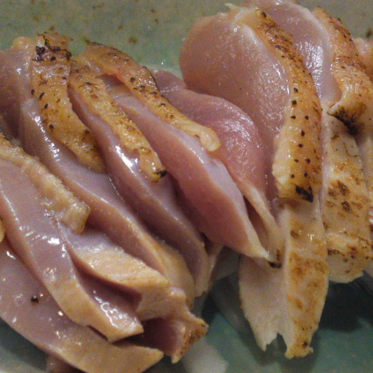

Messiah's Rare Chicken
Much like our Lord's one and only son, this dish, when prepared correctly is capable of gaining you
some serious notoriety and maybe even some disciples. Mild risk of Salmonella present.
Ingredients
- Chicken Breast
- lemon Pepper seasoning
- Salt
- Olive Oil
- Capers
- Lemon Juice
Cooking instructions
- Un-package and rinse chicken
- Coat in olive oil and season generously with Lemon Pepper
- Preheat Oven to 666 degrees celsius
- Place chicken in an oven safe dish, salt appropriately and top generously with capers
- Once oven is preheated, cook chicken for 2 min. Should look slightly browned on top and pink in the middle
- Remove from oven and plate on a serving dish
- Drizzle with lemon juice and serve while warm
- Offer up a prayer to our Messiah before consuming
- Ignore protests from guests that the chicken in undercooked. Jesus had many critics and was not deterred by them. True believers will
recognize your genius.